Inde Jour 2
Aujourd'hui était notre deuxième jour en Inde – encore une fois très passionnant !
Voici à nouveau la série de photos :
Après avoir bien dormi et s'être habitués au rythme local (c'est-à-dire que le décalage horaire est OK), nous avons pris le métro pour aller à Old Delhi. Comme le nom l'indique, c'est la partie ancienne de Delhi...
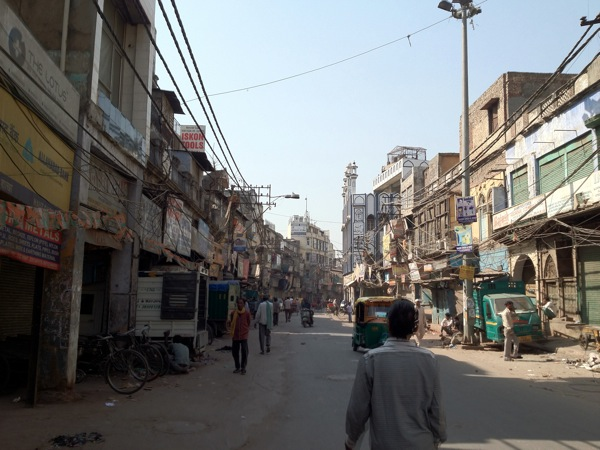
Old Delhi ressemble beaucoup plus à l'image que beaucoup de gens m'ont décrite avant mon départ : Une autre époque...
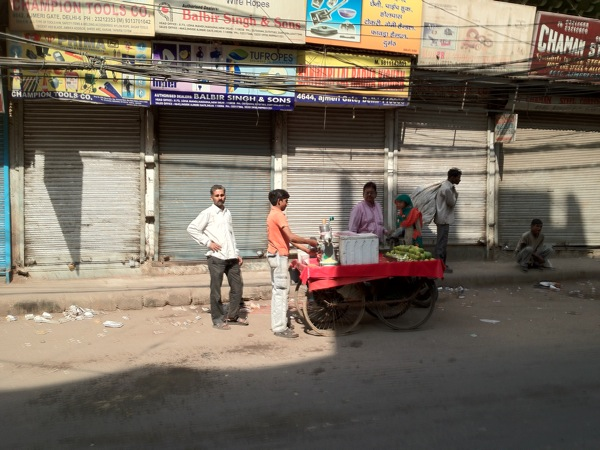
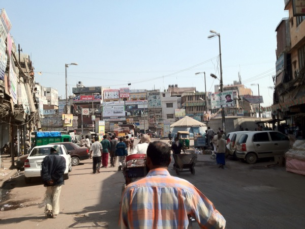
Ce qui n'est pas évident sur les photos, ce sont deux choses qui marquent fortement les impressions :
-
Le bruit : Toutes les rickshaws, voitures, camions, même les vélos klaxonnent et sonnent en permanence et très fort. Comme les rues d'Old Delhi n'ont pas de séparation entre la chaussée et le trottoir, on passe son temps à se pousser sur le côté pour ne pas se faire écraser ou bousculer.
-
Les odeurs : Tout sent – souvent pas très bon...
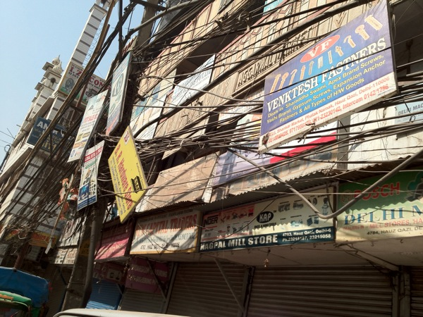
Comme on peut le voir, l'industrie informatique est omniprésente en Inde : Ici, elle marque aussi fortement le paysage urbain ;-)
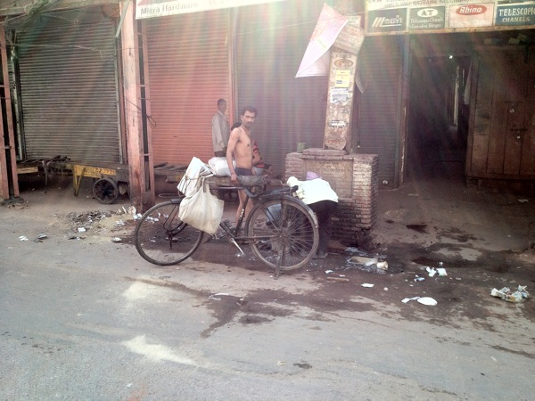
Beaucoup de gens se lavent ici dans la rue – peut-être parce que c'est dimanche ?
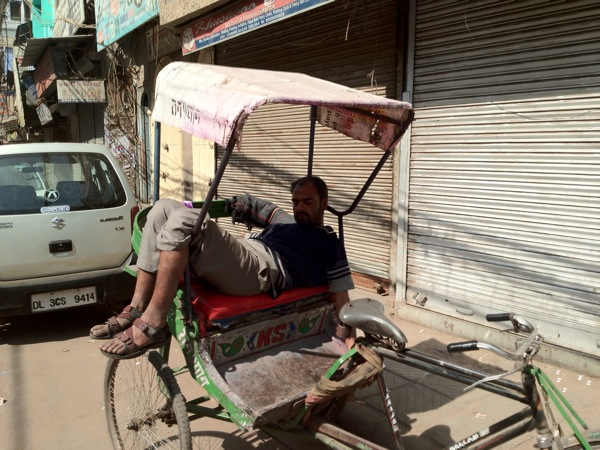
...et on dort aussi dans la voiture – ou quelque chose comme ça...
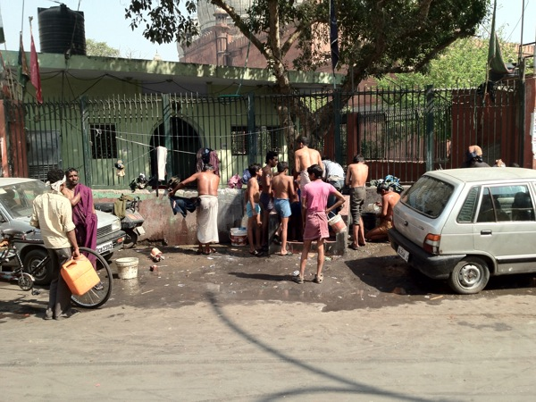
On voit aussi des animaux partout dans la rue
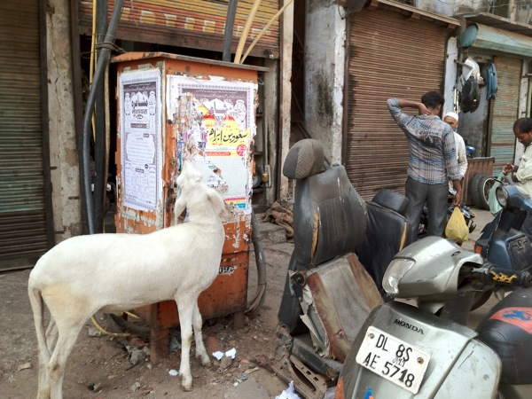
Et au milieu – un temple... Cette fois-ci une mosquée.
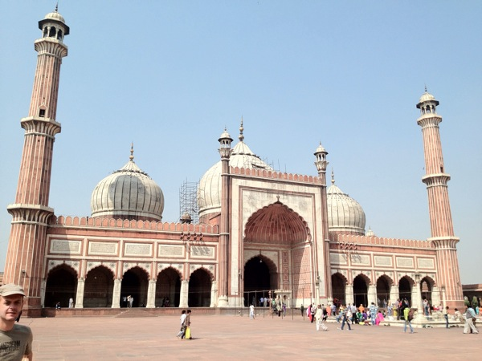
Dans la mosquée, on a l'impression que des familles entières y vivent :
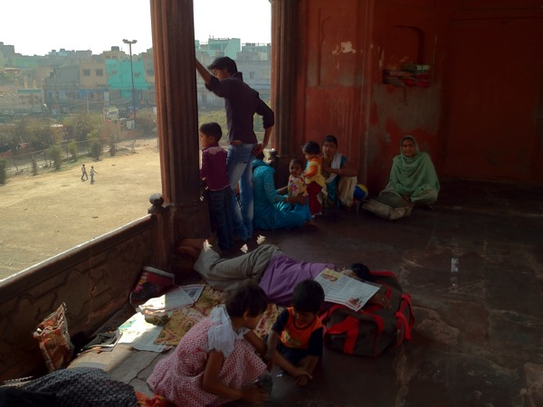
Et voici à quoi ressemble la mosquée depuis l'entrée, à travers la grande place :
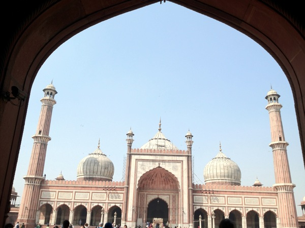
Ensuite, retour dans l'agitation des ruelles d'Old Delhi
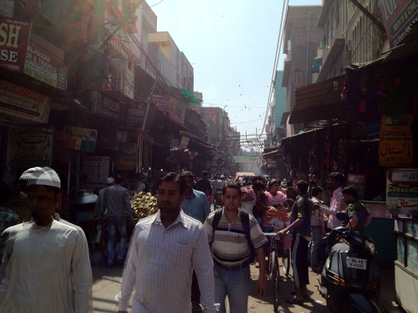
...où tout est à vendre...
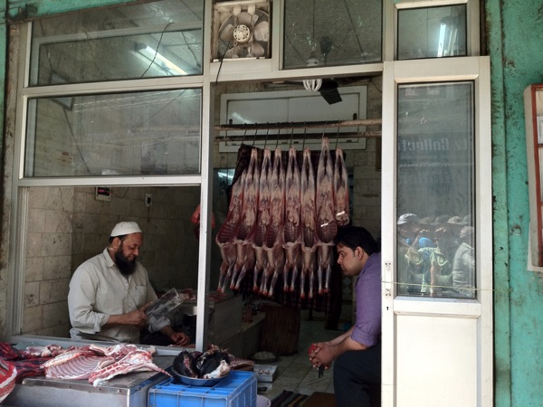
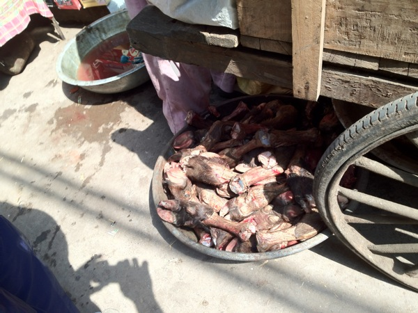
...et où l'on trouve de tout – même des services...
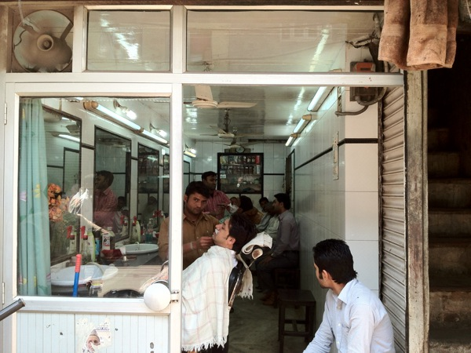
...mais aussi des magasins d'épices spectaculaires (et ce n'est même pas le marché aux épices !)
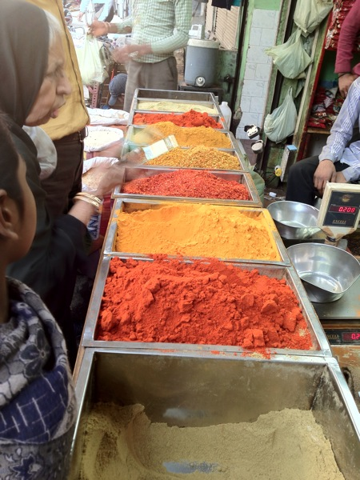
Ou des tissus (quelque part, il faut bien que les saris viennent)
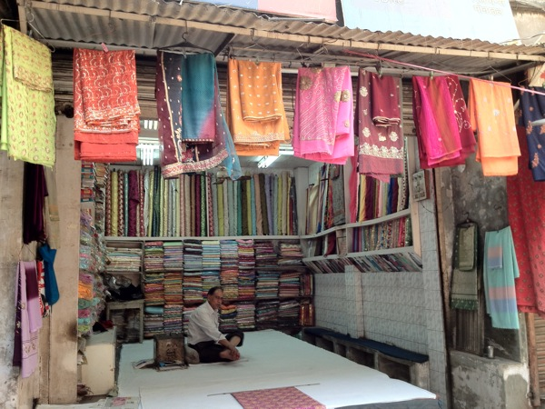
Lever les yeux est toujours étonnant...
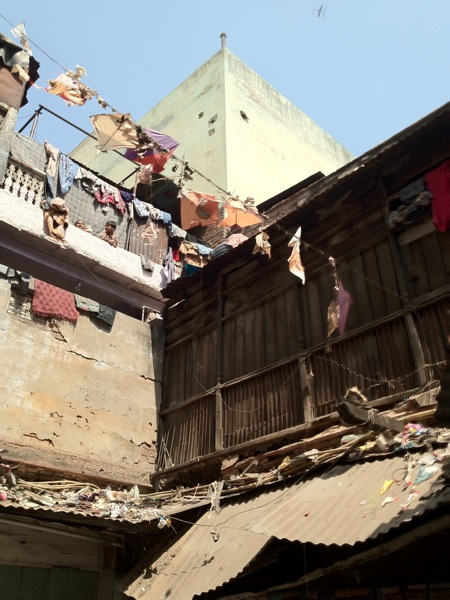
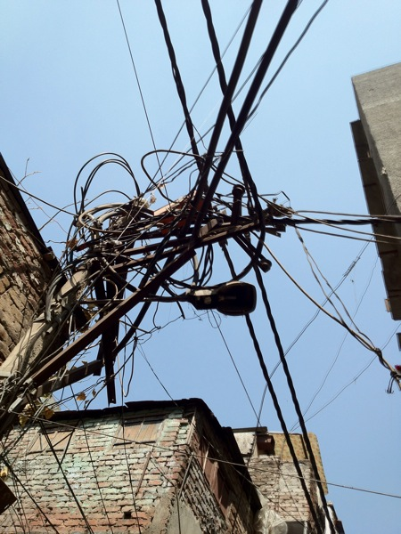
Ensuite, nous sommes allés au Fort Rouge. C'est... un temple...
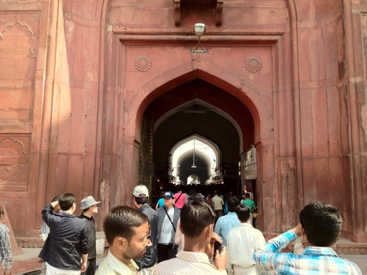
Ai-je déjà dit que les complexes de temples ici sont souvent très grands ?!
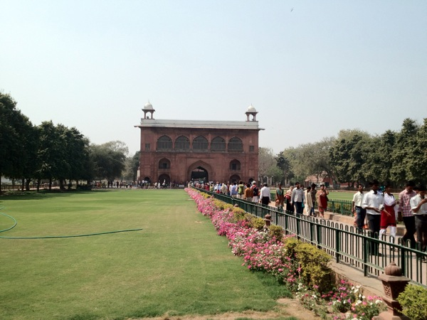
...et qu'il semble qu'on construise en permanence à tous les coins ?
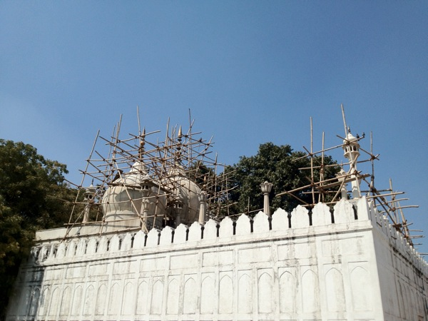
Après tant de temples, nous avions faim – mais nous ne voulions pas rejoindre les messieurs qui mangent directement dans la rue, alors nous sommes allés dans un restaurant touristique bien entretenu...
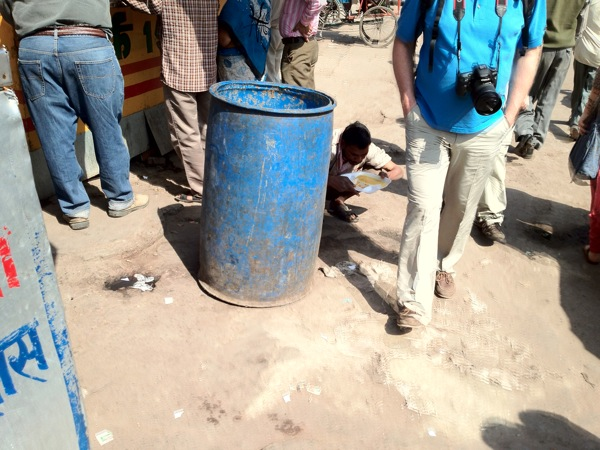
Ensuite, nous avons fait un petit tour dans un coin marqué par le style colonial anglais : Connaught Place.
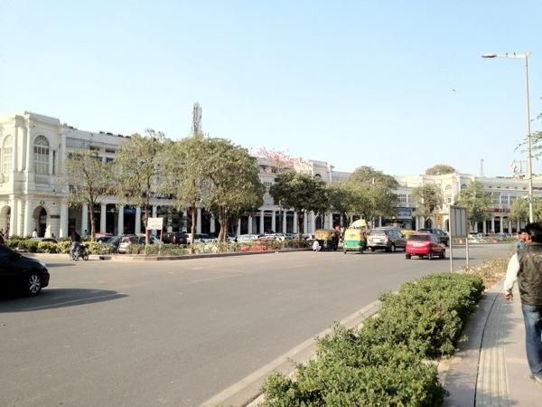
Ensuite, nous avons pris le métro pour retourner à l'hôtel, nous nous sommes douchés et avons rencontré des collègues indiens pour le dîner. Il est maintenant presque minuit ici, et je vais dormir.
Bonne nuit,
– Till.